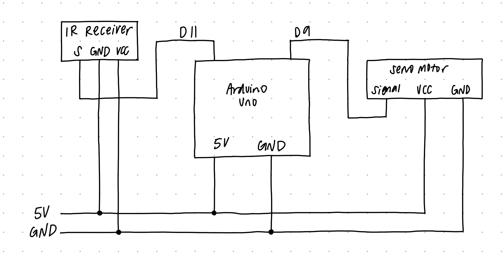
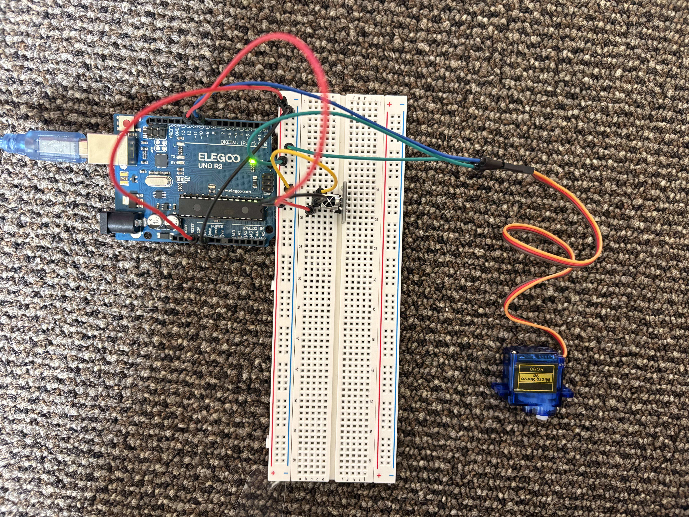
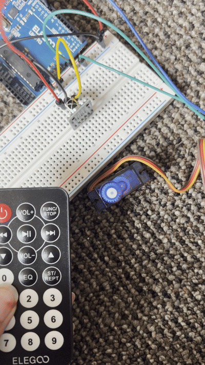
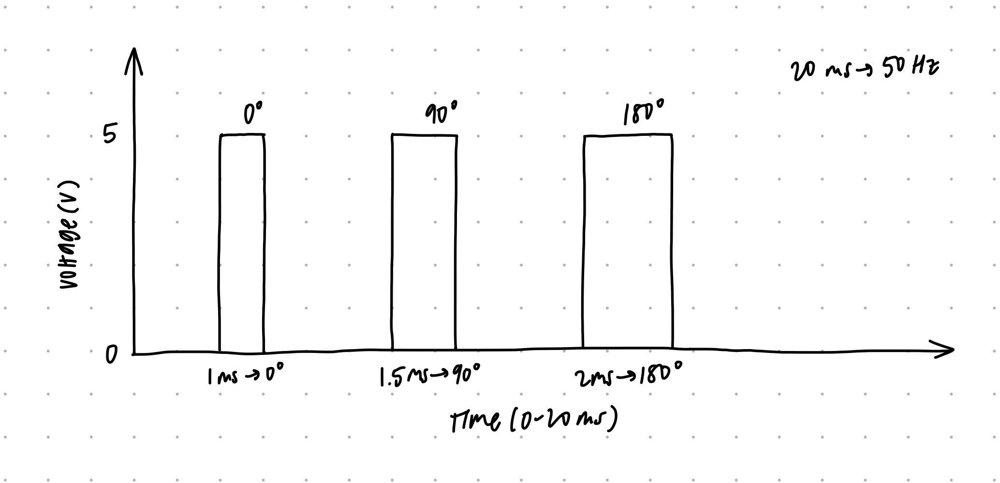

Here is all the documentation for assignment 4!

The schematic illustrates the Arduino Uno interfacing with an IR receiver module and an SG90 Servo motor. Pin 11 connects to the IR receiver signal line for digital input, and pin 9 connects to the servo motor signal line for PWM control output. Both components share common 5V and GND power rails.
This design uses an infrared (IR) remote control setup as the input sensor and a servo motor as the physical actuator output. It uses two dedicated Arduino hardware libraries (IRremote.hpp and Servo.h) to handle input decoding and output motor control.
Servo.h library uses timer interrupts on PWM pins to generate precise pulse signals operating at 50Hz (20ms total period), where high pulse durations between 1.0ms and 2.0ms control the absolute angular position of the motor shaft (0° to 180°).
IRremote library relies on timer/interrupt-capable digital pins to capture fast timing pulses transmitted by the infrared remote control at 38kHz.

Physical breadboard circuit layout showing the IR receiver wired to 5V, GND, and digital pin 11. The SG90 micro servo is connected with VCC to 5V, GND to GND, and its yellow signal wire running directly to digital pin 9.
// Include the standard Arduino Servo library to control the motor.
// Include the standard Arduino Servo library to control the motor.
#include
// Include the IRremote library to decode infrared signals from the remote.
#include
// Define the digital pin connected to the IR Receiver module signal line.
const int IR_RECEIVE_PIN = 11;
// Define the digital PWM pin connected to the Servo control line.
const int SERVO_PIN = 9;
// Instantiate the Servo object to interface with the motor.
Servo myservo;
// Initialize the servo angle variable to a neutral position of 90 degrees.
int currentAngle = 90;
// Set up initial hardware configurations upon board startup.
void setup() {
// Initialize serial communications at 9600 baud rate for debugging.
Serial.begin(9600);
// Attach the servo object to pin 9 to begin sending PWM signals.
myservo.attach(SERVO_PIN);
// Move the servo to the initial neutral position (90 degrees).
myservo.write(currentAngle);
// Start the IR receiver processing loop on pin 11.
IrReceiver.begin(IR_RECEIVE_PIN, ENABLE_LED_FEEDBACK);
}
// Continuously execute the main loop program.
void loop() {
// Check if an IR signal has been received by the module.
if (IrReceiver.decode()) {
// Read the decoded command code sent from the remote button.
uint16_t command = IrReceiver.decodedIRData.command;
// Print the raw hex command code to the serial monitor.
Serial.print("IR Code Received: 0x");
// Output hex representation of code.
Serial.println(command, HEX);
// Check if button '1' was pressed.
if (command == 0xC) {
// Increase current angle by 30 degrees while capping maximum to 180.
currentAngle = min(180, currentAngle + 30);
// Send the updated angle position command to the servo motor.
myservo.write(currentAngle);
}
// Check if button '2' was pressed.
else if (command == 0x18) {
// Decrease current angle by 30 degrees while capping minimum to 0.
currentAngle = max(0, currentAngle - 30);
// Send the updated angle position command to the servo motor.
myservo.write(currentAngle);
}
// Resume listening for the next incoming IR code.
IrReceiver.resume();
}
} 
Demonstration of physical execution: Pressing button '1' on the IR remote increases the servo shaft position in 30° increments up to 180°. Pressing button '2' decreases the servo angle in 30° increments down to 0°.

Graph plotting Voltage at Pin 9 over Time. Standard servo PWM operates at a 20ms frame period (50Hz). As the loop steps pos from 0 to 180 degrees over time, the high pulse width expands from 1.0ms (0°) to 1.5ms (90°) up to 2.0ms (180°).
To address an input device that gives an erroneous reading 1% of the time (outliers/spikes), we can implement a Median Filter that discards extreme values by taking multiple rapid readings and selecting the middle sample.
int readCleanSensor() {
int samples[5];
// Take 5 consecutive rapid readings from the input sensor
for (int i = 0; i < 5; i++) {
samples[i] = analogRead(SENSOR_PIN);
delay(2);
}
// Sort the array of readings in ascending numerical order
sortArray(samples, 5);
// Return the median (middle value), which discards isolated extreme outliers
return samples[2];
}To address an input device that is slightly noisy (randomly deviating up or down by ±10%), we can implement a Moving Average Filter to smooth out zero-mean random noise.
int readSmoothedSensor() {
long totalSum = 0;
int numReadings = 10;
// Collect 10 readings and compute their cumulative sum
for (int i = 0; i < numReadings; i++) {
totalSum += analogRead(SENSOR_PIN);
delay(2);
}
// Return the calculated average to cancel out positive and negative noise deviations
return (totalSum / numReadings);
}I did not use AI tools to complete this assignment.